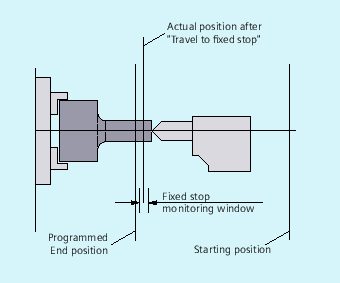

The "Travel to fixed stop" function can be used to establish defined forces for clamping workpieces, such as those required for tailstocks, quills and grippers. The function can also be used for the approach of mechanical reference points.
With sufficiently reduced torque, it is also possible to perform simple measurement operations without connecting a probe. The "travel to fixed stop" function can be implemented for axes as well as for spindles with axis-traversing capability.
| Command for activation and deactivation of the "Travel to fixed stop" function | |
| Activate function | |
| Deactivate function | |
| Optional command for setting the clamping torque Specified as % of the maximum drive torque | |
| Optional command for setting the window width for the fixed stop monitoring Specified in mm, inches or degrees | |
| Machine axis name Machine axes (X1, Y1, Z1, etc.) are programmed | |
| Note |
The commands The programming of |
The movement to the destination point can be described as a path or positioning axis movement. With positioning axes, the function can be performed across block boundaries.
Travel to fixed stop can be performed simultaneously for several axes and parallel to the movement of other axes. The fixed stop must be located between the start and end positions.
| Notice |
Risk of collisionIt is not permissible to program a new position for an axis if the "Travel to fixed stop" function has already been activated for an axis/spindle. Spindles must be switched to position-controlled mode before the function is selected. |
Example:
| Program code | Comment |
|---|---|
| X250 Y100 F100 FXS[X1]=1 FXST[X1]=12.3 FXSW[X1]=2 | ; Axis X1 travels with feedrate F100 (specification optional) to target position X=250 mm.The clamping torque is 12.3% of the maximum drive torque, monitoring is performed in a 2 mm wide window. |
| ... |
Deselection of the function triggers a preprocessing stop.
The block with FXS[<axis>]=0 may and should contain traversing movements.
| Notice |
Risk of collisionThe traversing movement to the retraction position must move away from the fixed stop, otherwise damage to the stop or to the machine may result. The block change takes place when the retraction position has been reached. If no retraction position is specified, the block change takes place immediately after the torque limit has been deactivated. |
Example:
| Program code | Comment |
|---|---|
| X200 Y400 G01 G94 F2000 FXS[X1]=0 | ; Axis X1 is retracted from the fixed stop to position X = 200 mm. All other parameters are optional. |
| ... |
Any programmed torque limiting FXST is effective from the block start, i.e. the fixed stop is also approached at a reduced torque. FXST and FXSW can be programmed and changed in the part program at any time. The changes take effect before traversing movements in the same block.
| Notice |
Risk of collisionProgramming of a new fixed stop monitoring window causes a change not only in the window width, but also in the reference point for the center of the window if the axis has moved prior to reprogramming. The actual position of the machine axis when the window is changed is the new window center point. The window must be selected such that only a breakaway from the fixed stop causes the fixed stop monitoring to respond. |
See also:
Travel to fixed stop (FXS, FXST, FXSW): Further information